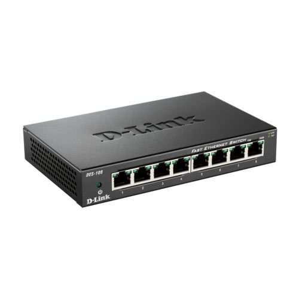
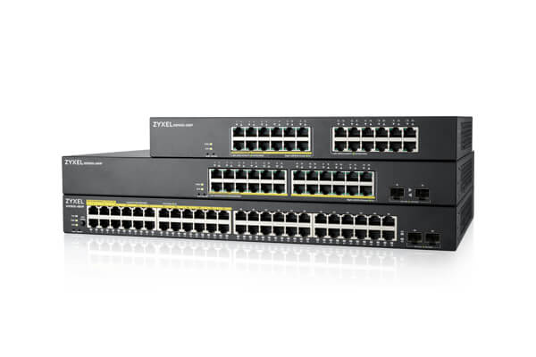
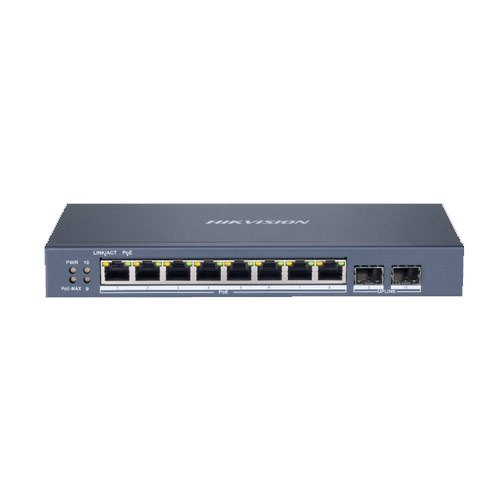
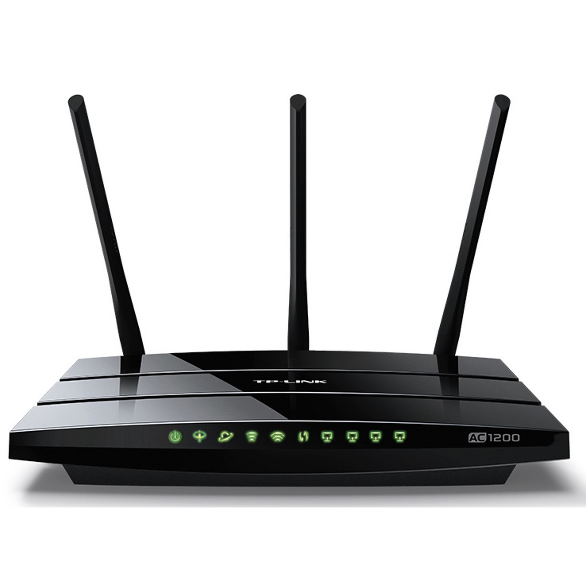

Chapter 4 - Networks and the effects of using them
4.1.1 Network devices
Modems
Modem means 'modulator demodulator' and is a device that converts (i.e. modulates) a computer's digital signal into an analogue signal for transmission over an existing telephone line. It also does the reverse process, in that it converts analogue signals from a telephone line into digital signals (demodulates), to enable the computer to process the data. Modems are essentially used to allow computers to connect to networks (for example, the internet) over long distances using the existing telephone networks. Dial-up modems operate at transmission speeds of about 60 kilobits* per second, which is extremely slow by today's standards. *60 kilobits 60000 bits. 1 bit refers to a binary digit and has the value 1 or O, Modern broadband or ADSL (asymmetric digital subscriber line) modems operate at up to 100 Megabits* per second (12.5 Mbytes/second) when using fibre-optic cables (although the old technology copper cables can usually only offer a maximum of 20 Mbits/second). The term 'asymmetric' actually means that the modem is faster at downloading data (i.e. receiving data) than it is at uploading data (i.e. sending data). *1 byte 8 bits; 100 megabits 100 million bits. 58 Although ADSL modems still use the existing telephone network, unlike dial-up modems they do not tie up the line while accessing the internet — they can always be 'on', so internet access is available 24 hours if necessary, and the landline telephone can be used at the same time. ADSL modems can allow telephone conversations and internet tramc to occur at the same time because of the wide bandwidth signal used (different frequencies are used to transmit internet signals so they don't interfere with normal telephone traffic). Cable modems also exist, which allow cable television providers to offer internet access as well as receiving television signals.

Hubs
Hubs are hardware devices that can have a number of devices or computers connected to them. They are often used to connect together a number of devices to form a LAN for example, a star network (see later). Its main task is to take any data packet (this is a group of data being transmitted) received at one ofits ports and broadcast it to every computer in the network. This essentially means that using a hub is not a very secure or effcient method of data distribution.
Switches
Switches are similar to hubs but are much more efficient in the way that they distribute data packets. As with hubs, they connect a number of devices or computers together to form a LAN.
However, unlike a hub, the switch checks the data packet received and works out its destination address (or addresses) and sends the data to the appropriate computer(s) only. This makes using a switch a more secure way ofdistributing data. Each device or computer on a network has a media access control (MAC) address that uniquely identifies it. Data packets sent to switches will have a MAC address identifying the source of the data and additional addresses identifring each device that should receive the data (see Section 4.1.2 for more on MAC addresses).
Bridge
Bridges are devices that connect one LAN to another LAN that uses the same protocol (communication rules). They are often used to connect together different parts ofa LAN so that they can function as a single LAN.
Router
Routers enable data packets to be routed between the different networks, for example to join a LAN to a wide area network (WAN). A router would typically have an internet cable plugged into it and several cables connecting to computers and other devices on the LAN.
Broadband routers sit behind a firewall. The firewall protect the computers on a network. The router's main function is to transmit internet and transmission protocols between networks and also allow private networks to be connected together. Routers inspect the data packets (see below) sent to it from any computer on any of the new,rorks connected to it. Since every computer on the same network has the same part of an internet protocol (IP) address, the router is able to send the data packet to the appropriate switch and it will then be delivered using the MAC destination address (see Section 4.1.2). Ifthe MAC address doesn't match any device on the network, it passes on to another switch on the same nenvork until the appropriate device is found.
